BuscaMangá
Suas fontes brasileiras no Paperback
Reunimos os principais agregadores e scans do Brasil em um único repositório otimizado. Desfrute de leitura rápida, capítulos atualizados, filtros avançados e zero anúncios nativamente no iOS.
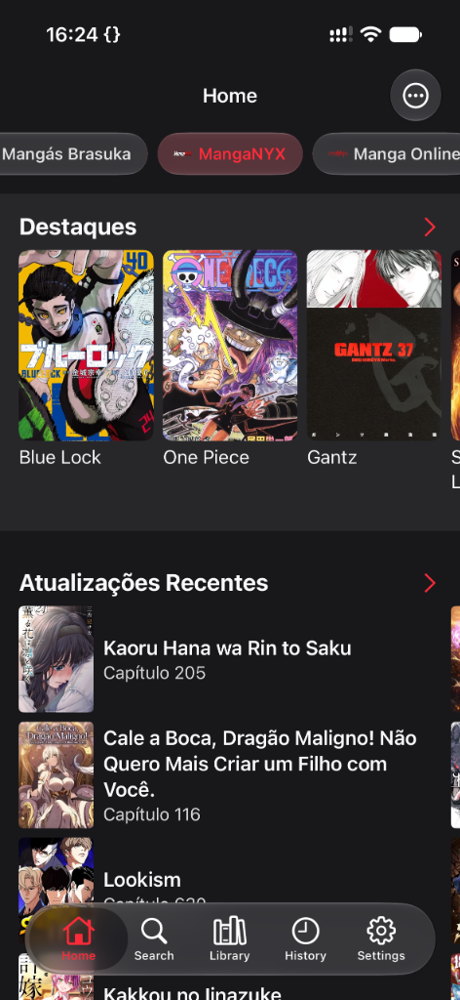
100% Funcional
Capítulos & Destaques
Tudo o que você precisa para ler mangás no iOS
O BuscaMangá conecta o Paperback aos principais scans e agregadores nacionais com total fluidez.
Fontes Nacionais
Acesso direto às principais fontes e scans do Brasil: MangaFlix, Tao Sect, Arthur Scan, Ninja Scan, Kami Sama Explorer, Boruto Explorer, Yuri on Air, MangaNYX, Mangás Brasuka e muito mais.
Paperback v0.9 Nativo
Totalmente adaptado para a versão moderna do Paperback, trazendo busca rápida, listagem de capítulos e navegação estável.
Sem Propagandas
Leitura pura e sem distrações. Nada de abas abrindo sozinhas, pop-ups ou anúncios que atrapalham a experiência.
Feito pela Comunidade
Projeto open source hospedado no GitHub. Você pode contribuir com novas extensões, correções ou sugerir melhorias.
Extensões Disponíveis no Repositório
Instale qualquer uma destas fontes diretamente no aplicativo Paperback após adicionar nosso link.
MangaNYX
AtivoCatálogo abrangente de mangás, manhwas e webtoons com atualizações diárias.
v0.9 • Português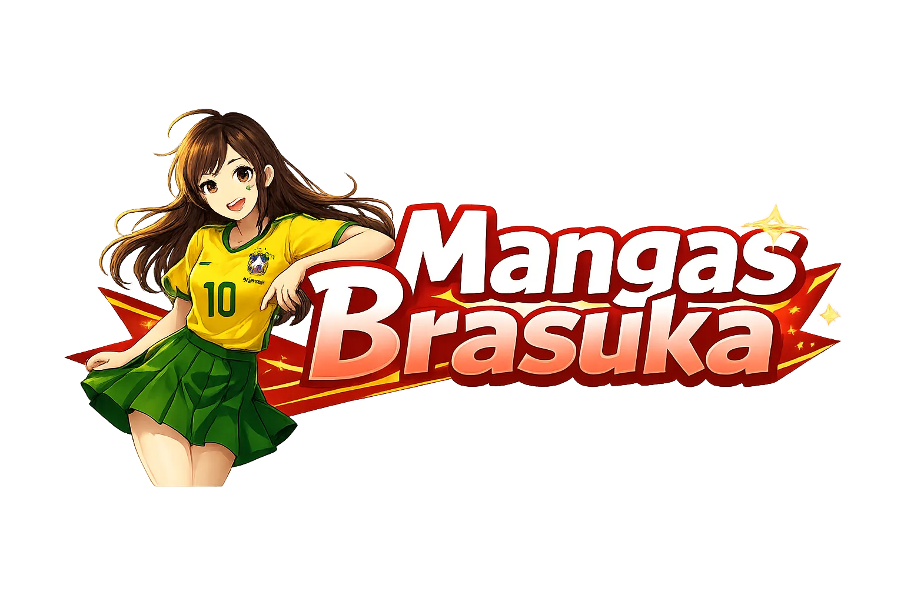
Mangás Brasuka
AtivoLançamentos mais lidos da comunidade brasileira em alta resolução.
v0.9 • PortuguêsManga Online
AtivoGrande variedade de títulos clássicos e novidades semanais rápidas.
v0.9 • Português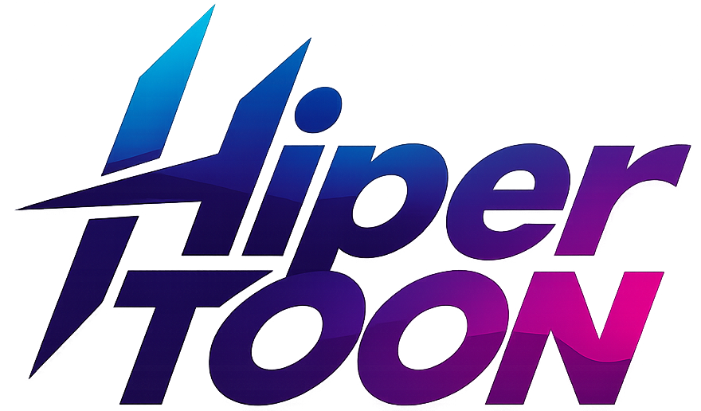
Hipertoon
AtivoEspecializado em manhwas, webcomics modernas e capítulos verticais coloridos.
v0.9 • PortuguêsFliptru
AtivoComunidade de quadrinhos autorais, webcomics e mangás nacionais independentes.
v0.9 • PortuguêsManhastro
AtivoEspecializado em manhwas de ação, cultivo e fantasia com lançamentos rápidos.
v0.9 • Português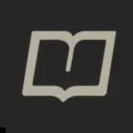
MangaLivre To
AtivoNova geração do catálogo MangaLivre com busca rápida e capítulos atualizados.
v0.9 • PortuguêsMangaLivreBlog
AtivoAgregador com acervo histórico de obras clássicas e mangás em andamento.
v0.9 • PortuguêsHQ Now
AtivoVasto acervo de quadrinhos ocidentais, graphic novels e mangás em alta definição.
v0.9 • PortuguêsLeitura Manga
AtivoCatálogo dinâmico com milhares de mangás e manhuas com leitura otimizada.
v0.9 • PortuguêsNebulosa Scan
AtivoTraduções e edições exclusivas da equipe Nebulosa com foco em qualidade visual.
v0.9 • PortuguêsManga Flix
AtivoCatálogo abrangente de mangás, manhwas e webtoons com leitor em alta definição.
v0.9 • Português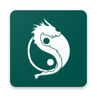
Tao Sect
AtivoScan tradicional focada em mangás de artes marciais, ação, Baki, Kengan e seinen.
v0.9 • Português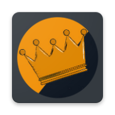
Arthur Scan
AtivoEspecializada em manhwas, cultivação oriental e obras épicas de ação e magia.
v0.9 • Português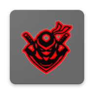
Ninja Scan
AtivoTraduções de manhwas, manhuas e quadrinhos orientais de combate, ação e fantasia.
v0.9 • Português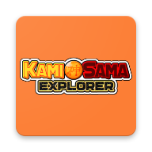
Kami Sama Explorer
AtivoAcervo histórico das obras de Akira Toriyama, Dragon Ball e clássicos shonen.
v0.9 • Português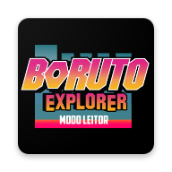
Boruto Explorer
AtivoExtensão com foco integral e lançamentos rápidos do universo de Naruto e Boruto.
v0.9 • Português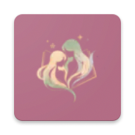
Yuri on Air
AtivoPortal especializado em mangás, manhwas e webcomics dedicadas aos gêneros Yuri e Shoujo Ai.
v0.9 • PortuguêsHentai HQ
AtivoAcervo diversificado de HQs e quadrinhos adultos traduzidos para o português.
v0.9 • PortuguêsHQ Hentai
AtivoQuadrinhos e doujinshis selecionados com alta resolução e atualizações frequentes.
v0.9 • Português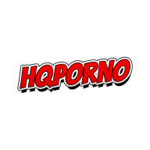
HQ Porno
AtivoQuadrinhos adultos e graphic novels com leitura contínua e páginas completas.
v0.9 • PortuguêsMuito Hentai
AtivoSeção de mangás, manhwas e quadrinhos do portal Muito Hentai com leitura otimizada.
v0.9 • PortuguêsMundo Hentai
AtivoAcervo de doujinshis e mangás do Mundo Hentai integrados para o leitor Paperback.
v0.9 • PortuguêsNHentai BR
AtivoCatálogo brasileiro com doujinshis, one-shots e comics traduzidas em alta resolução.
v0.9 • PortuguêsComo instalar o repositório no Paperback
O processo leva menos de um minuto. Siga as instruções abaixo para adicionar todas as fontes no seu leitor.
Instale o Paperback
Certifique-se de ter o app Paperback v0.9 instalado no seu iPhone ou iPad via TestFlight ou App Store.
Adicione o Repositório
Toque no botão "Adicionar ao Paperback" no topo desta página para abrir diretamente o aplicativo.
Ou copie a URL manualmente e vá em Configurações > Repositórios > + no app.
Instale as Fontes
No Paperback, abra a aba Explorar, selecione o repositório BuscaMangá e instale as fontes brasileiras de sua preferência.
Perguntas Frequentes (FAQ)
O que é o BuscaMangá?
É um repositório comunitário de extensões para o leitor Paperback no iOS/iPadOS, focado exclusivamente no público brasileiro. Ele permite que você pesquise, baixe e leia mangás e webtoons das principais scans do Brasil sem propagandas ou anúncios.
É compatível com qual versão do Paperback?
Este repositório foi construído especificamente para o Paperback v0.9, utilizando os novos padrões de toolchain e tipos oficiais do Paperback.
Como atualizar as fontes instaladas?
O Paperback verifica periodicamente se há novas versões das extensões. Para atualizar manualmente, basta ir na aba Configurações > Repositórios > Atualizar no próprio aplicativo.
Uma fonte parou de carregar, como reportar?
Sites de mangás mudam de domínio ou alteram suas estruturas com frequência. Se notar algum erro, abra uma issue no nosso repositório no GitHub para que a comunidade possa investigar e corrigir rapidamente.
Pronto para turbinar seu Paperback?
Adicione o repositório agora mesmo e tenha acesso instantâneo a milhares de capítulos traduzidos em português.